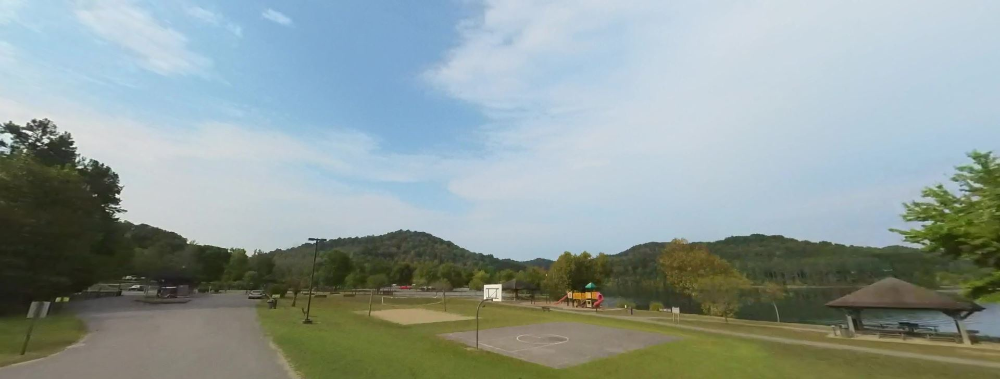

Paintsville Lake was made in 1983 as a reservoir by the United States Army Corps of Engineers. On it resides a morina that provides a spot to dock, fish, and eat.

A ground level view of the Lake and some of its accomidations. Here's a rendered fly-through of the lake and its surroundings
This project's goal is to provide insight on the surrounding geography of this lake. Although seemingly irrelevant, it is a popular hub for the locals and is Paintsville Lake State Park's most major attraction.